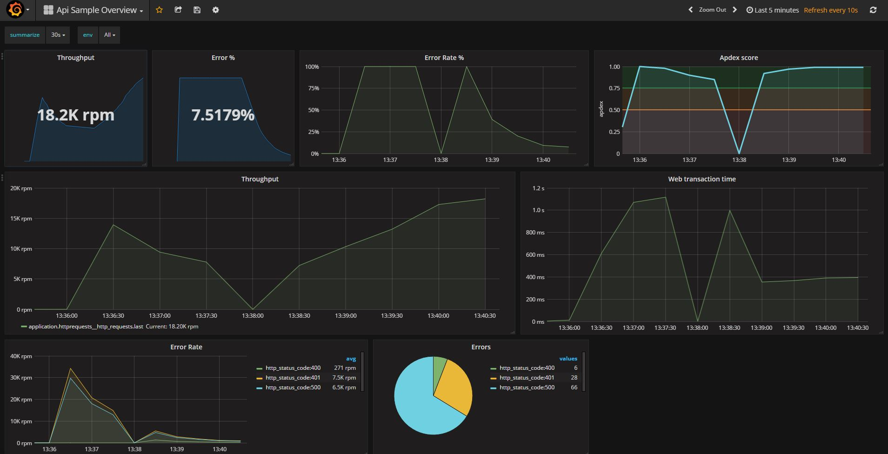

Web Application Monitoring
App Metrics includes a set of middleware components to automatically track typical metrics used in monitoring a web application. The metrics recorded by thse middleware components are registered under the Application.HttpRequests context.
The following are the default metrics recorded:
Apdex
Monitors the Application Performance Index of the web application which allows us to monitor end-user satisfication.
Errors
The error middleware records the following error metrics:
- A Meter measuring the error rate per route tagged by http status code
- A Meter measuring the web applications overall error rate tagged by http status code
- A Gauge measuring the web applications overall percentage of failing requests. This is calculated by using a hit percentage gauge which calculates the percentage of failed requests using the one minute rate of error requests and one minute rate overall web requests.
Throughput & Web Transaction Time
To measure the throughput and web transaction times within a web application, Timers are registered to record:
- The overall throughput and request duration of all routes
- The throughput and request duration per route within the web application
POST and PUT request sizes
A Histogram is used to track POST and PUT requests sizes of incomming HTTP requests.
OAuth2
If your web application is secured with OAuth2, by default, error rates and the throughput (overall and per route) is tracked on a per client basis. This provides some useful insights into clients of your APIs.
Sample Dashboard
Below is a sample Grafana dashboard showing showing some of the above metrics.

Note
All sample dashboards mentioned in the documenation can be downloaded and imported into Grafana.